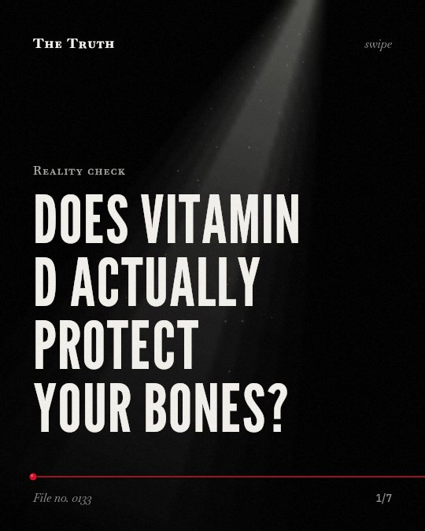

Reality check
Does vitamin D actually protect your bones?

Vitamin D does not prevent fractures in all healthy adults.
Evidence shows benefits are highly specific to the condition, dosage, and individual genetics. The data is mixed and lacks sufficient evidence for broad health outcomes.
Established. Several studies combined, or official data. The evidence is mixed.
What the research found
Vitamin D supplementation reduced the risk of cancer death by 15%.
“Vitamin D supplementation reduced the risk of cancer death by 15%.”
Meta-analysis, 2019. Zhang et al., BMJ.
The variant allele (Tt+tt) of the TaqI polymorphism and the FF genotype of the FokI variant were associated with a better response to vitamin D supplementation (p = 0.02 and p < 0.001).
“the variant allele (Tt+tt) of the TaqI polymorphism and the FF genotype of the FokI variant were associated with a better response to vitamin D supplementation (p = 0. 02 and p < 0. 001).”
Meta-analysis, 2022. Usategui‐Martín et al., Nutrients.
Vitamin D supplementation alone was not associated with all cause mortality in adults compared with placebo or no treatment.
“Vitamin D supplementation alone was not associated with all cause mortality in adults compared with placebo or no treatment.”
Meta-analysis, 2019. Zhang et al., BMJ.
For patients with diabetes or impaired glucose tolerance, vitamin D supplementation showed a small effect on fasting glucose (-0.32 mmol/l, 95%CI -0.57 to -0.07) and a small improvement in insulin resistance (standard mean difference -0.25, 95%CI -0.48 to -0.03).
“For patients with diabetes or impaired glucose tolerance, meta-analysis showed a small effect on fasting glucose (-0. 32 mmol/l, 95%CI -0. 57 to -0. 07) and a small improvement in insulin resistance (standard mean difference -0. 25, 95%CI -0. 48 to -0. 03).”
Meta-analysis, 2012. George et al., Diabetic Medicine.
The SCORAD index and EASI score decreased after vitamin D supplementation (standard mean difference = -5.85; 95% CI = -7.66 to -4.05).
“In addition, the SCORAD index and EASI score decreased after vitamin D supplementation (standard mean difference = -5. 85; 95% CI = -7. 66 to -4. 05).”
Meta-analysis, 2016. Kim et al., Nutrients.
Combined calcium and vitamin D supplementation could prevent osteoporosis hip fracture in postmenopausal women.
“Combined calcium and vitamin D supplementation could prevent osteoporosis hip fracture in postmenopausal women.”
Meta-analysis, 2020. Liu et al., Food & Function.
Benefits depend on your specific health profile.
Combined calcium and vitamin D may prevent hip fractures in postmenopausal women. However, vitamin D alone does not reduce all-cause mortality in adults.
Your supplements may not be a universal fix.
That may be why general health advice feels inconsistent. Your specific genetics and current health conditions determine how your body responds to what you take.
This part is our reading of the evidence, not a finding.
A bottle of pills on your kitchen counter.
You take them every morning hoping for a broad shield against aging, but your body processes them based on a blueprint you cannot see.
The honest summary
The evidence shows that vitamin D's effects are highly specific to the condition, the dosage, and the individual's genetics rather than providing a universal benefit for all adults.
Many findings are inconsistent or lack sufficient data to draw definitive conclusions regarding broad health outcomes like mortality or vascular events.
Are you taking supplements for your body, or for the promise of a general cure?
Sources
- Yu Zhang, Fang Fang, Jingjing Tang et al. (2019). Association between vitamin D supplementation and mortality: systematic review and meta-analysis. BMJ. Meta-analysis, cited 362 times.
- Priya George, Ewan R. Pearson, Miles D. Witham (2012). Effect of vitamin D supplementation on glycaemic control and insulin resistance: a systematic review and meta‐analysis. Diabetic Medicine. Meta-analysis, cited 358 times.
- Ricardo Usategui‐Martín, Daniel Antonio de Luis Román, José María Fernández-Gómez et al. (2022). Vitamin D Receptor (VDR) Gene Polymorphisms Modify the Response to Vitamin D Supplementation: A Systematic Review and Meta-Analysis. Nutrients. Meta-analysis, cited 198 times.
- Chunxiao Liu, Xiaotong Kuang, Kelei Li et al. (2020). Effects of combined calcium and vitamin D supplementation on osteoporosis in postmenopausal women: a systematic review and meta-analysis of randomized controlled trials. Food & Function. Meta-analysis, cited 160 times.
- Min Kim, Soo‐Nyung Kim, Yang Lee et al. (2016). Vitamin D Status and Efficacy of Vitamin D Supplementation in Atopic Dermatitis: A Systematic Review and Meta-Analysis. Nutrients. Meta-analysis, cited 152 times.
Also read for this file, not quoted
- Palacios et al. (2016). Vitamin D supplementation during pregnancy: Updated meta-analysis on maternal outcomes.
This file was researched and drafted by software, then checked by rules a model cannot talk its way around: each quote above was matched word for word against the paper, and every number had to appear in it. How files are made.